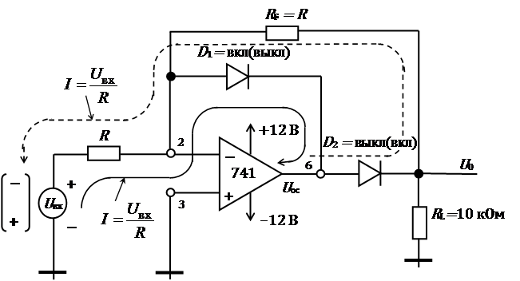
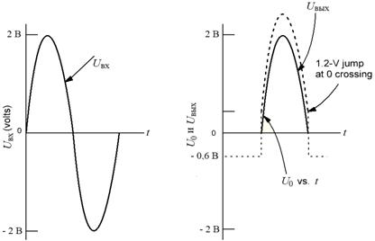
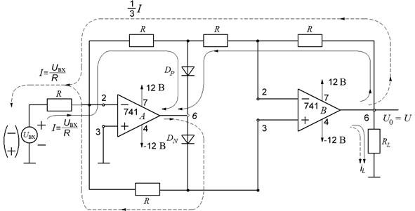

электронный ресурс по учебной дисциплине 1-58 01 01 - "Инженерно-психологическое обеспечение информационных технологий"
|
||
| Оглавление | Программа | Теория | Практика | Контроль знаний | Об авторах | ||
| Практика
ЛАБОРАТОРНАЯ РАБОТА № 3 Прецизионные однополупериодные и двухполупериодные выпрямители 3.1. Цель работы Изучить применение операционного усилителя для построения точных однополупериодных и двухполупериодных выпрямителей. 3.2. Теоретические сведения Во многих устройствах обработки аналоговых сигналов, например, в измерительных схемах, необходимо выделение либо составляющих только одной полярности (однополупериодное выпрямление), либо определение абсолютного значения сигнала (двухполупериодное выпрямление). Основным ограничением кремниевых диодов является то, что они не могут выпрямлять напряжения, меньшие 0,6 В. Устройства, работающие как идеальный диод, могут быть построены на основе ОУ и двух обычных диодов. Такие устройства способны выпрямлять входные сигналы в несколько милливольт. Эти устройства разделяются на линейные однополупериодные выпрямители и прецизионные двухполупериодные выпрямители. Однополупериодные выпрямители. Выходной сигнал линейного однополупериодного выпрямителя зависит от величины и полярности входного сигнала. Линейный однополупериодный выпрямитель передает на выход схемы только один полупериод входного сигнала и ограничивает второй полупериод на нулевом уровне. Полупериод входного сигнала может передаваться на выход схемы с инвертированием или без инвертирования. Выходной сигнал в таком выпрямителе может быть усилен, или ослаблен, или остаться без изменения в зависимости от выбора резисторов и места включения диодов в схеме с ОУ. Линейные однополупериодные выпрямители также называются прецизионными однополупериодными выпрямителями и работают как идеальный диод. Прецизионные двухполупериодные выпрямители. Выходной сигнал двухполупериодного выпрямителя пропорционален абсолютному значению входного сигнала и не зависит от его полярности. 3.2.1. Инвертирующий линейный однополупериодный выпрямитель Инвертирующий однополупериодный выпрямитель показан на рис. 3.1. В этой схеме инвертирующий ОУ превращен в схему прецизионного однополупериодного выпрямителя путем добавления в схему двух диодов.  Рис. 3.1. Однополупериодный выпрямитель Когда на вход схемы подано положительное напряжение Uвх, диод D1 открыт и на выходе ОУ усилителя формируется отрицательное напряжение, равное падению напряжения на открытом диоде (≈ 0,6 В). Благодаря этому диод D2 закрыт, ток в цепи резистора обратной связи отсутствует и выходное напряжение схемы равно 0 В. Когда на вход схемы подано отрицательное напряжение Uвх , то выходное напряжение операционного усилителя Uвых становится положительным, диод D2 открывается. Схема работает как инвертор, так как и . Входной ток (направление тока показано штриховой линией) определяется как Uвх/R, а коэффициент усиления схемы как –RF / R. Когда на инвертирующем входе операционного усилителя нулевой потенциал, диод D1 закрывается. Входной ток (направление показано штриховой линией) становится равным и усиливается. Выходной и входной сигналы однополупериодного выпрямителя показаны на рис. 3.2. Когда Uвх пересекает 0 В (стремясь к отрицательному), Uвых скачкообразно изменяется от - 0,6V к + 0,6V, рис.3.2.  Рис. 3.2. Выходной и входной сигналы положительного выхода инвертирующего однополупериодного выпрямителя 3.2.2. Прецизионный двухполупериодный выпрямитель Двухполупериодный выпрямитель принимает сигнал переменного тока на входе и инвертирует положительный или отрицательный полупериод и передает на выход схемы оба полупериода – инвертированный и не инвертированный. Таким образом, для положительного прецизионного двухполупериодного выпрямителя , а для отрицательного прецизионного двухполупериодного выпрямителя . Прецизионный двухполупериодный выпрямитель показан на рис. 3.5. В схеме используются резисторы одинакового номинала.  Рис. 3.3. Прецизионный двухполупериодный в90ыпрямитель Для положительных входных сигналов диод DP открыт (DN закрыт) так, что оба операционных усилителя работают как инверторы, и . Для отрицательных входных напряжений диод DN открыт (DP закрыт) таким образом операционный усилитель B работает как инвертор. 3.3. Приборы и оборудование Программа компьютерного моделирование электронных схем Multisim: 3.4. Порядок выполнения лабораторной работы Напряжение питания операционных усилителей ±12 V. В качестве Uin используется сигнал генератора. 3.4.1. Инвертирующий линейный однополупериодный выпрямитель, положительный выход 1. Соберите и исследуйте схему (рис. 3.1) однополупериодного выпрямителя для . 2. Подайте входной синусоидальный сигнал Uвх =10 мВ, частота f = 1 кГц. Зафиксируйте картинки временных диаграмм входных и выходных сигналов. Измерьте амплитуду и частоту. 3. Измените амплитуду и частоту входного сигнала Uвх = 100 мВ и f = 5 кГц. Повторите п. 2 для этого случая. 4. Измените амплитуду и частоту входного сигнала Uвх = 1 В и f = 10 кГц. Повторите п. 2 для этого случая. 3.4.2. Инвертирующий линейный однополупериодный выпрямитель, отрицательный выход 1. Соберите и исследуйте схему (см. рис. 3.1) однополупериодного выпрямителя, включение диодов измените на противоположное. 2. Подайте входной сигнал треугольной формы Uвх = 10 мВ, частота f = 1 кГц. Зафиксируйте картинки временных диаграмм входных и выходных сигналов. Измерьте амплитуду и частоту. 3. Измените амплитуду и частоту входного сигнала Uвх =100 мВ и f = 5 кГц. Повторите п. 2 для этого случая. 4. Измените амплитуду и частоту входного сигнала Uвх = 1 В и f = 10 кГц. Повторите п. 2 для этого случая. 3.4.3. Инвертирующий линейный однополупериодный выпрямитель, положительный выход и коэффициент усиления АF≠1 1. Соберите и исследуйте однополупериодный выпрямитель (см. рис. 3.1) с R=1 кОм и RF=10 кОм; 2. Подайте входной сигнал с Uвх =10 мВ и частотой f = 1 кГц. Зафиксируйте картинки временных диаграмм входных и выходных сигналов. Измерьте амплитуду и частоту. Определите усиление цепи по напряжению; 3. Измените RF на RF=100 кОм и повторите пункт 2. 3.4.4. Прецизионный двухполупериодный выпрямитель, U0= |Uвх| 1. Соберите и исследуйте прецизионный двухполупериодный выпрямитель (см. рис. 3.3) с R = 1 кОм. 2. Подайте входной синусоидальный сигнал с Uвх = 10 мВ и частотой f = 1 кГц. Зафиксируйте картинки временных диаграмм входных и выходных сигналов. Измерьте амплитуду и частоту. 3. Измените амплитуду и частоту входного сигнала Uвх =100 мВ и f = 5 кГц. Повторите п. 2 для этого случая; 4. Измените амплитуду и частоту входного сигнала Uвх = 1 В и f = 10 кГц. Повторите п. 2 для этого случая. 3.4.5. Прецизионный двухполупериодный выпрямитель, U0= -|Uвх| 1. Соберите и исследуйте прецизионный двухполупериодный выпрямитель (рис. 3.3), включение диодов измените на противоположное; 2. Подайте входной сигнал треугольной формы Uвх = 10 мВ и частота f = 1 кГц. Зафиксируйте картинки временных диаграмм входных и выходных сигналов. Измерьте амплитуду и частоту; 3. Измените амплитуду и частоту входного сигнала Uвх =100 мВ и f = 5 кГц. Повторите п. 2 для этого случая; 4. Измените амплитуду и частоту входного сигнала Uвх =1 В и f = 10 кГц. Повторите п. 2 для этого случая; 3.5. Содержание отчёта 1. Цель эксперимента. 2. Схемы, которые были исследованы и временные диаграммы, переходные характеристики. 3. Результаты исследования. 4. Выводы по лабораторной работе. 5. Ответы на контрольные вопросы. 3.6. Контрольные вопросы 1. Какой выпрямитель называется прецизионным? 2. Укажите особенности инвертирующего и неинвертирующего прецизионных однополупериодных выпрямителей. 3. Укажите особенности прецизионного двухполупериодного выпрямителя с положительным и отрицательным выходами.
|
| (С) БГУИР |